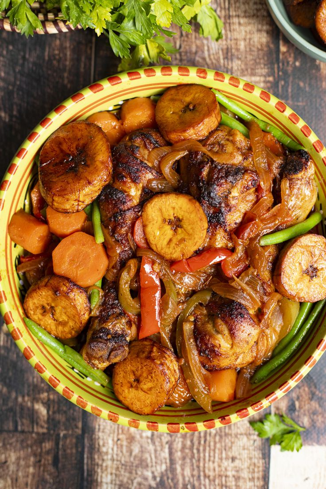

Home
Poulet Dg

Desrciption
Le Poulet DG (« Directeur Général ») est un plat emblématique du Cameroun : du poulet doré, des plantains frits et des légumes croquants, mijotés dans une sauce parfumée. Son nom viendrait des repas servis autrefois aux hauts dirigeants. Aujourd’hui, il se retrouve sur toutes les tables, des fêtes de famille aux restaurants.
Pour 4 à 6 personnes · Préparation : 30 min · Cuisson : 45 min
Ingredients
Le poulet:
- 1 poulet découpé en morceaux (ou des cuisses)
- 4 gousses d’ail, 1 morceau de gingembre
- 1 oignon, du persil ou du céleri
- 1 cube de bouillon, du sel, du poivre
Les légumes et la sauce:
- 1 poivron, 2 carottes, 1 poireau, 1 oignon
- 2 tomates fraîches (ou 1 cuillère de concentré)
- 1 piment (à doser selon votre goût)
- Huile d'arachide pour la cuisson
L'accompagnement:
- 3 à 4 plantains bien mûrs
Steps
- Mariner : mixez l’ail, le gingembre, l’oignon et le persil. Enrobez-en le poulet, ajoutez le bouillon, le sel et le poivre, puis laissez reposer au moins 1 heure.
- Cuire le poulet : faites-le bouillir ou mijoter dans un peu d’eau pendant 20 à 25 minutes, jusqu’à ce qu’il soit tendre.
- Le faire dorer : égouttez-le puis faites-le frire dans l’huile chaude jusqu’à ce qu’il soit bien doré. Réservez.
- Frire les plantains : coupez-les en rondelles ou en diagonale et faites-les dorer. Réservez.
- Préparer la sauce : dans la même poêle, faites revenir l’oignon, puis ajoutez les tomates, le piment et un peu du bouillon de cuisson du poulet. Laissez réduire quelques minutes.
- Assembler : ajoutez les carottes, le poivron et le poireau, et laissez cuire 5 minutes pour garder du croquant. Remettez le poulet, mélangez doucement et laissez mijoter 5 minutes.
- Servir : posez les plantains frits sur le plat ou à côté, et servez chaud.